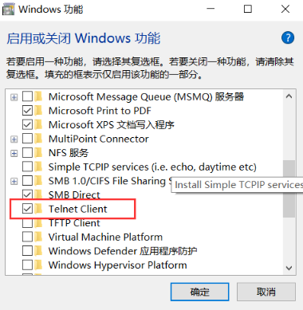
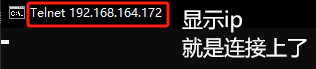

telnet测试端口号
简介
Telnet协议是TCP/IP协议族中的一员，是Internet远程登录服务的标准协议和主要方式。它为用户提供了在本地计算机上完成远程主机工作的能力。在终端使用者的电脑上使用telnet程序，用它连接到服务器。终端使用者可以在telnet程序中输入命令，这些命令会在服务器上运行，就像直接在服务器的控制台上输入一样。可以在本地就能控制服务器。要开始一个telnet会话，必须输入用户名和密码来登录服务器。Telnet是常用的远程控制Web服务器的方法。（引自百度百科）。
作用
在客户端上如何验证机器是否可以正常访问到服务器的端口呢？可以使用telnet命令来查看。
开启服务
服务器
需要有对应服务端口的使用中，
客户端
在控制面板中选择“程序和功能”，在“程序和功能”界面选择“打开或关闭Windows功能”。在弹出的“windows功能”窗口中将Telnet服务器和Telnet客户端勾选并保存设置。
设置完成后需要重新打开一个命令行窗口运行telnet命令，设置前打开的命令窗口运行telnet是无效的。
使用方法
进入telnet
使用方法：在CMD命令框中输入
1 | telnet <IP地址或者域名> <端口号> |
回车后，如果弹出黑色窗体，表示连接成功。
退出telnet
telnet测通后，如何退出
1、ctrl + ]
2、quit